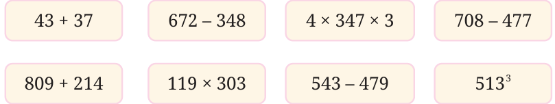
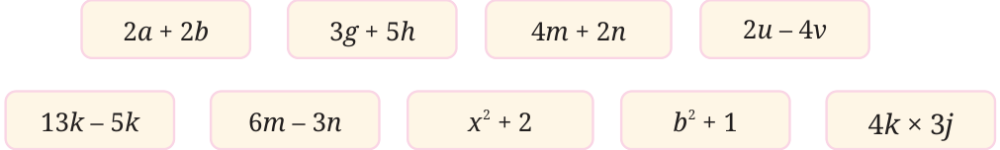

We know how to identify even numbers. Without computing them, find out which of the following arithmetic expressions are even.

Using our understanding of how parity behaves under different operations, identify which of the following algebraic expressions give an even number for any integer values for the letter-numbers.


The expression \(4m + 2q\) will always evaluate to an even number for any integer values of m and q. We can justify this in two different ways -
- •We know 4m is even and 2q is even for any integers m and q.
Therefore, their sum will also be even.
- •The expression \(4m + 2q\) is equal to the expression \(2(2m +\) q). Here,
the expression \(2(2m +\) q) means 2 times \(2m + q\). In other words, 2 is a factor of this expression. Therefore, this expression will always give an even number for any integers m and q. For example, if \(m = 4\) and \(q = - 9\), the expression \(4m + 2q\) becomes \(4 \times 4 + 2 \times\) ( \(- 9) = - 2\), which is an even number.
In the expression \(x + 2\), x is even if x is even, and x is odd if x is odd.
Therefore, the expression \(x + 2\) will not always give an even number. An example and a non-example for when the expression evaluates to an
even number - (i) if \(x = 6\), then \(x + 2 = 38\), and (ii) if \(x = 3\), then \(x + 2 = 11\). Similarly, determine and explain which of the other expressions always give even numbers. Write a couple of examples and non-examples, as appropriate, for each expression.
Write a few algebraic expressions which always give an even number.